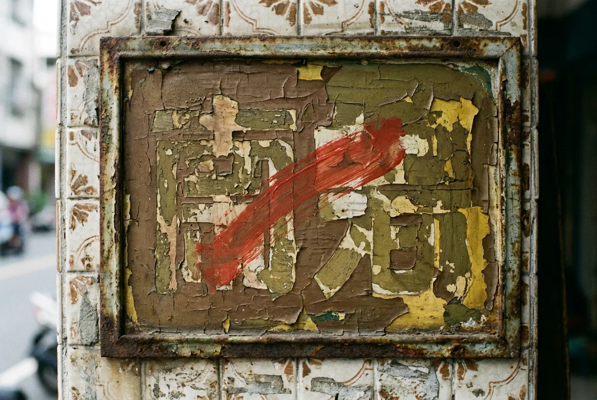
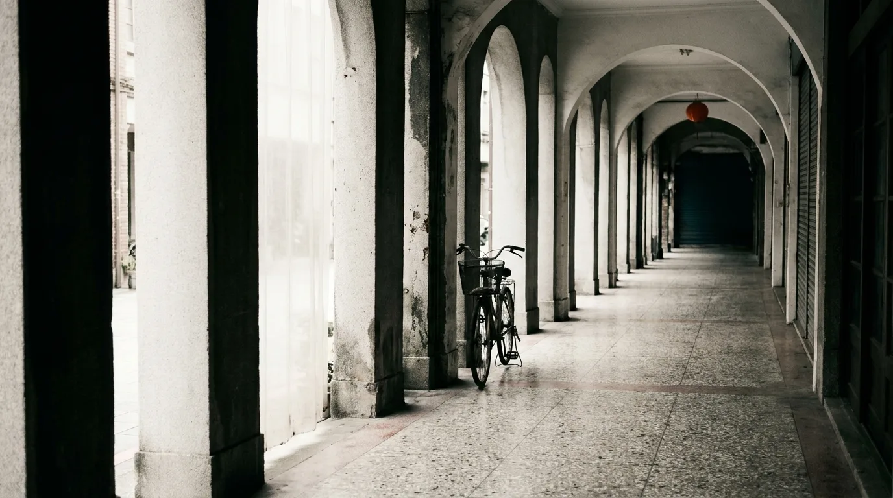
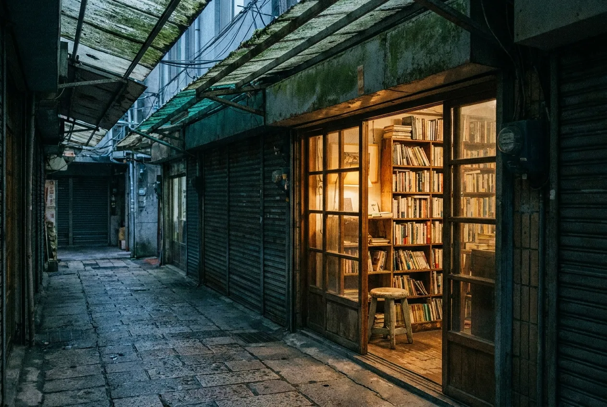
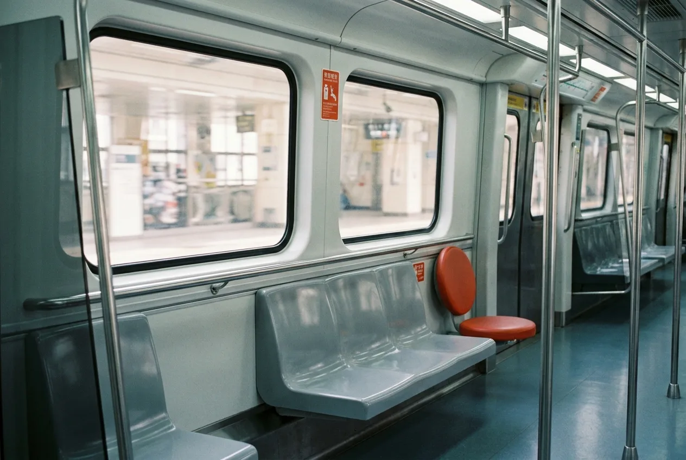
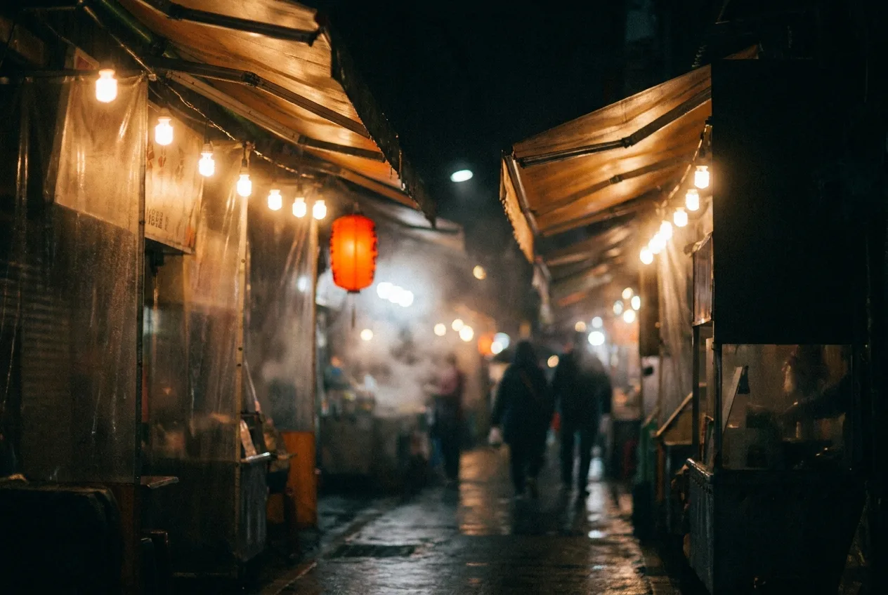

01設計現場 / DESIGN
一塊招牌的重量:手寫招牌字與街道視覺
在電腦字體統治街道之前,城市的臉孔是由一支毛筆與一桶油漆寫成的。
Vol.07 — 2026 夏 / SUMMER
格物誌是一本聚焦城市、設計與日常的獨立觀察誌。我們以紀實攝影與長文,記錄台灣街道裡那些被視而不見的設計細節。

它不完全屬於室內,也不完全屬於街道。一條連續的廊道,如何成為台灣城市最誠實的公共客廳。
閱讀全文 →
在電腦字體統治街道之前,城市的臉孔是由一支毛筆與一桶油漆寫成的。

當大型書店一間間退場,一些只有六坪大的小店,卻在巷子深處活了下來。

從拉環的高度到座椅的弧度,一節車廂裡藏著數百個你從未察覺的設計決定。

讓食物看起來更誘人、讓人潮願意停留——夜市的光,是一門精算過的生意。